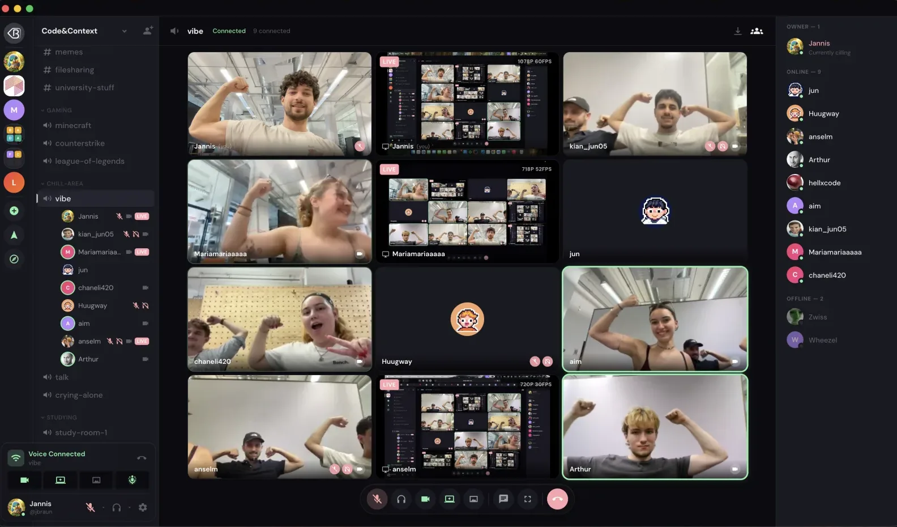
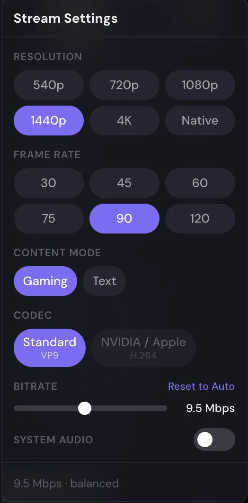
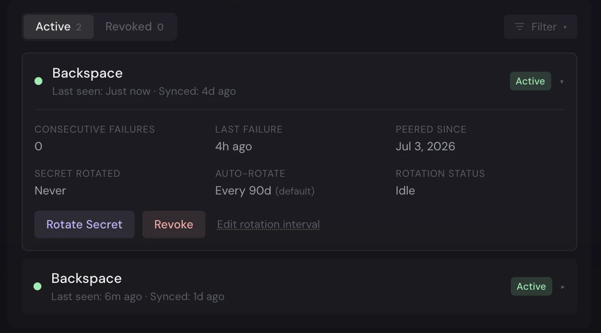
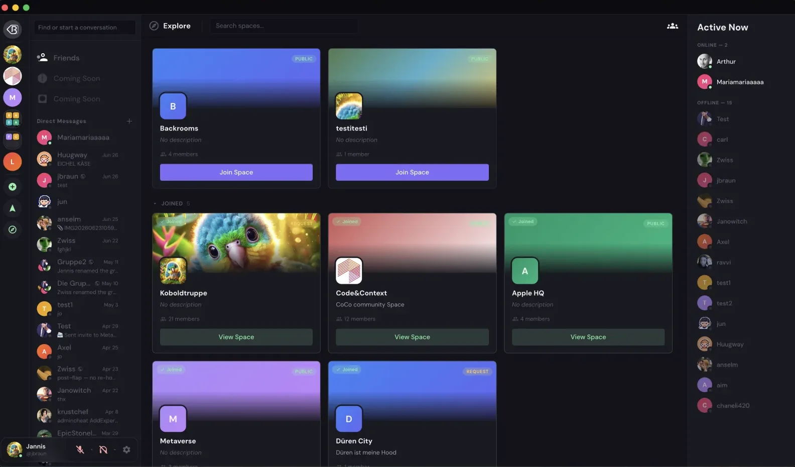

Group chat that lives on your own hardware.
Backspace is a self-hosted, open-source Discord alternative: spaces, roles, voice and video, screen sharing up to 4K at 120fps, and federation between servers that stay independently owned.
one interactive installer · automatic HTTPS · runs on a Raspberry Pi
moved us off discord last night. the whole thing runs off the pi in my closet now
how painful was the setup
one installer. caddy grabbed the certs itself, first account became admin. that was it
come to lounge, I'll stream the factorio base
ok this share is stupidly sharp. what is this, 1440p?
4k. open the connection inspector if you don't believe me
A control surface, not a mute button.
Most chat apps give you one volume slider and a codec you never see. Backspace hands you the signal path. When a stream stutters, the connection inspector shows you what is happening on the wire, so you fix it instead of guessing at it.
- codec
- VP9 or hardware H.264, chosen per stream
- resolution
- up to 4K at 120fps, inside bounds the admin sets
- bitrate
- set it yourself, reset to auto anytime
- volume
- 0 to 200%, per person and per screen share
- noise
- RNNoise suppression scrubs the keyboard clatter
- inspector
- live bitrate, codec, ping, packet loss, jitter
voice and video run on LiveKit and are optional. everything else works without them.


real screenshots: a nine-person call, and the per-stream settings panel.
Independent servers, shared conversation.
Peer two Backspace instances and their users can be friends, message, and call each other, while every server stays the property of whoever runs it. Requests between servers are HMAC-signed, secrets rotate on a schedule you set, and a peer can be revoked at any time. There is no directory and no central anything: two admins agree, and their servers shake hands.
Honest limits: this is Backspace-to-Backspace, not Matrix or ActivityPub, and it is young. If you want a mature, open federation standard today, Matrix is the better choice, and our comparison doc says exactly that.

from the admin panel: peers are health-checked, secrets rotate on schedule, and revocation is one click away.
The parts you'd expect, done properly.

space discovery: public, request-to-join, and private spaces.
One installer, then it's yours.
The interactive installer walks you through Docker Compose, and Caddy handles HTTPS without being asked twice. There are no default credentials to forget about: the first account you register becomes the admin.
- runs on a Raspberry Pi: the prebuilt image covers amd64 and arm64
- your data is SQLite files on your own disk, with automatic backups
- AGPL-3.0, with a commercial dual license where the AGPL doesn't fit
Read this before you star it.
Backspace is young, and you should pick tools with clear eyes. Three things it does not give you today:
- No Discord ecosystem. There is no bot marketplace and no army of integrations. You get the platform, not the crowd.
- Mobile is a PWA. It installs to your home screen and works well, but native iOS and Android apps are still on the roadmap.
- The federation is young. It peers Backspace with Backspace. For a mature open standard across many ecosystems, Matrix is the better pick.
An honest snapshot.
The full write-up, including where each of these is the better choice, lives in the comparison doc.
| Capability | Backspace | Discord | Revolt | Matrix | Mumble |
|---|---|---|---|---|---|
| Self-hostable | Yes | No | Yes | Yes | Yes |
| Open source | AGPL-3.0 | No | Yes | Yes | Yes |
| Discord-style UX | Yes | Yes | Yes | Different | No |
| Video and screen share | Up to 4K/120fps | Yes | Limited | Yes | No |
| Per-stream media controls | Yes | No | No | Partial | Audio only |
| Federation | Between instances | No | No | Yes, open standard | No |
Questions people actually ask.
Is Backspace a self-hosted Discord alternative?
Yes. It gives you a Discord-style experience with spaces, channels, roles, voice, video, screen sharing, DMs, and friends, running entirely on your own server so you own the data and set the rules.
Does it have screen sharing and high-quality video?
Yes. Screen sharing goes up to 4K/120fps within admin-set bounds, with per-stream codec, bitrate, and resolution controls, RNNoise noise suppression, and a live connection inspector. Voice and video use LiveKit and are optional.
What does federation mean here?
Independent Backspace instances can peer with each other so users on different servers can be friends, DM, and call across instances, while each server stays independently owned. Requests between servers are HMAC-authenticated. It is Backspace-to-Backspace, not Matrix or ActivityPub.
Can I run it on a Raspberry Pi?
Yes. The installer pulls a prebuilt multi-architecture image for amd64 and arm64, so low-power and ARM boxes skip the heavy local build.
Is it really open source?
Yes, under the GNU AGPL-3.0, with a commercial dual-license option for cases the AGPL does not fit. Every released version stays available under the AGPL.
The next place you hang out could be yours.
Clone it, run the installer, and you're the admin.